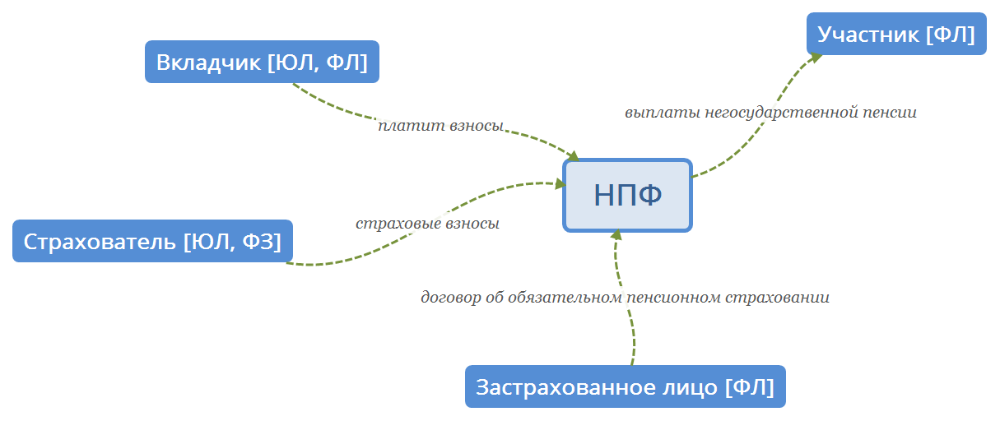

Глава 1. Основные положения
Законы:
- ФЗ "О накопительной пенсии".
- ФЗ "О негосударственных пенсионных фондах".

Пенсионные накопления - обязательное пенсионное страхование. Пенсионные резервы - негосударственное пенсионное обеспечение.
[1] Негосударственный пенсионный фонд - это организация, исключительной деятельностью которой является негосударственное пенсионное обеспечение, в том числе досрочное негосударственное пенсионное обеспечение, и обязательное пенсионное страхование.
[2] Основным видом деятельности НПФ является негосударственное пенсионное обеспечение.
[3] Договор негосударственного пенсионного обеспечения - это соглашение между НПФ и вкладчиком НПФ, в соответствии с которым вкладчик обязуется уплачивать пенсионные взносы в НПФ, а НПФ обязуется выплачивать участнику (участникам) фонда негосударственную пенсию.
[4] Договор об обязательном пенсионном страховании - это соглашение между фондом и застрахованным лицом в пользу застрахованного лица или его правопреемников, в соответствии с которым фонд обязан при наступлении пенсионных оснований осуществлять назначение и выплату застрахованному лицу накопительной пенсии и (или) срочной пенсионной выплаты или единовременной выплаты либо осуществлять выплаты правопреемникам застрахованного лица.
[5] Вкладчик - это физическое или юридическое лицо, являющееся стороной пенсионного договора и уплачивающее пенсионные взносы в НПФ.
[6] Участник - это физическое лицо, которому в соответствии с заключенным между вкладчиком и НПФ пенсионным договором должны производиться или производятся выплаты негосударственной пенсии.
[7] Страхователь - это физическое или юридическое лицо, обязанное перечислять страховые взносы на финансирование накопительной пенсии в пользу застрахованного лица.
[8] Застрахованное лицо - это физическое лицо, заключившее договор об обязательном пенсионном страховании.
[9] Пенсионный взнос - это денежные средства, уплачиваемые вкладчиком в пользу участника в соответствии с условиями пенсионного договора.
[10] Страховой взнос - это индивидуально возмездные обязательные платежи на обязательное пенсионное страхование на финансирование накопительной пенсии, уплачиваемые страхователем в пользу застрахованного лица в Пенсионный фонд Российской Федерации для последующей передачи в выбранный этим застрахованным лицом фонд
[11] Негосударственная пенсия - это денежные средства, регулярно выплачиваемые участнику в соответствии с условиями пенсионного договора.
[12] Накопительная пенсия - это ежемесячная денежная выплата, назначаемая и выплачиваемая фондом застрахованному лицу в соответствии с Федеральным законом "О накопительной пенсии", Федеральным законом "О негосударственных пенсионных фондах" и договором об обязательном пенсионном страховании.
[13] Пенсионная схема - это совокупность условий, определяющих порядок уплаты пенсионных взносов и выплат негосударственных пенсий.
[14] Пенсионные основания - это:
- I. Основания приобретения участником права на получение негосударственной пенсии;
- II. Основания приобретения застрахованным лицом права на получение накопительной пенсии;
III. Основания приобретения застрахованным лицом права на компенсацию в случае расторжения договора поручения;IV. Основания приобретения застрахованным лицом права на получение профессиональной пенсии.
[15] Пенсионные резервы - это совокупность средств, находящихся в собственности НПФ и предназначенных для исполнения НПФ обязательств перед участниками в соответствии с пенсионными договорами.
[16] Пенсионные накопления - это:
- I. Совокупность средств, в том числе средства взносов на софинансирование формирования пенсионных накоплений, поступивших в соответствии с законодательством РФ;
- II. Совокупность средств, находящихся в собственности НПФ;
III. Совокупность средств, предназначенных для исполнения обязательств НПФ перед вкладчиками в соответствии с договорами об обязательном пенсионном страховании и договорами о создании профессиональной пенсионной системы и формируемых в соответствии с Федеральным законом "О негосударственных пенсионных фондах";- IV. Средства (часть средств) материнского (семейного) капитала, направленные на формирование накопительной пенсии в соответствии с Федеральным законом "О дополнительных мерах государственной поддержки семей, имеющих детей", находящихся в собственности фонда, предназначенных для исполнения обязательств фонда перед застрахованными лицами в соответствии с договорами об обязательном пенсионном страховании и формируемых в соответствии с Федеральным законом "О негосударственных пенсионных фондах".
[17] Инвестиционный портфель НПФ по обязательному пенсионному страхованию - это активы, сформированные за счет средств пенсионных накоплений, переданных фондом в доверительное управление управляющей компании (управляющим компаниям).
[18] Инвестиционный портфель управляющей компании - это активы, сформированные за счет средств пенсионных накоплений, полученных управляющей компанией в доверительное управление от одного НПФ.
[19] Результатом размещения пенсионных резервов являются:все вышеперечисленное
- I. Дивиденды и проценты (доход) по ценным бумагам;
- II. Чистый финансовый результат от реализации активов;
- III. Чистый финансовый результат, отражающий изменение рыночной стоимости пенсионных резервов за счет переоценки на отчетную дату;
- IV. Другие виды доходов от операций по размещению пенсионных резервов.
[20] Результатом инвестирования средств пенсионных накоплений
- I. Дивиденды и проценты (доход) по ценным бумагам, а также по банковским депозитам;
- II. Чистый финансовый результат от реализации активов;
- III. Чистый финансовый результат, отражающий изменение рыночной стоимости инвестиционного портфеля за счет переоценки на отчетную дату;
IV. Другие виды доходов от операций по инвестированию средств пенсионных резервов.
[21] Правила НПФ - это документы, определяющие порядок и условия исполнения фондом обязательств по пенсионным договорам (пенсионные правила фонда), договорам об обязательном пенсионном страховании (страховые правила фонда).
[22] Укажите НЕверное утверждение: D. Раскрытие информации НПФом - обеспечение доступности информации ограниченному кругу лиц в соответствии с процедурой, гарантирующей ее нахождение и получение.
[23] Субъектами отношений по негосударственному пенсионному обеспечению, обязательному пенсионному страхованию являются:
- I. НПФы;
- II. Пенсионный фонд Российской Федерации;
- III. Специализированные депозитарии;
- IV. Вкладчики;
- V. Участники;
- VI. Застрахованные лица;
VII. Брокеры;- VIII. Страхователи.
[24] Устав НПФ содержит: все вышеперечисленное
[25] В соответствии с Федеральным законом "О негосударственных пенсионных фондах" НПФ должен: все вышеперечисленное
[26] Укажите верное утверждение:
- ВЕРНОЕ A. Фонд вправе размещать средства пенсионных резервов как самостоятельно, так и через управляющие компании в соответствии с договорами доверительного управления;
- B. У управляющей компании
возникает право собственности в отношении переданных ей пенсионных резервов
- C. Самостоятельно фонд вправе размещать средства пенсионных резервов и пенсионных накоплений только в надежные объекты размещения, перечень которых регламентирован государством (в частности, в государственные ценные бумаги Российской Федерации, банковские депозиты, недвижимость)
- D. Негосударственная пенсия - это денежные средства, регулярно выплачиваемые
вкладчику в соответствии с условиями пенсионного договора
[27] Управляющая компания - это акционерное общество или общество с ограниченной (дополнительной) ответственностью, созданные в соответствии с законодательством Российской Федерации и имеющие лицензию на осуществление деятельности по управлению инвестиционными фондами, паевыми инвестиционными фондами и негосударственными пенсионными фондами. Обществ с дополнительной отвественностью уже нет, но ответ считается за правильный.
[28] Инвестиционная декларация, являющаяся неотъемлемой частью договора доверительного управления (ДУ) содержит: все вышеперечисленное